HORT 281 :: Lecture 36 :: PRODUCTION TECHNOLOGY OF ROSE

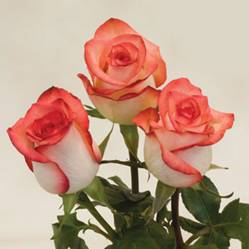PRODUCTION TECHNOLOGY OF ROSE
Scientific Name: Rosa hybrida
Local Name: Gulab
Hindi Name: Gulab
Family: Rosaceae
Origin and History
Rose is also mentioned in the Bible and is believed to be known before the Bible era. According to archaeological findings, the Palestinians cultivated roses before the birth of Christ. Rose is surely very much steeped in history. It is the national flower of England, and some American States adopted rose as their emblem. It is assumed that some of the important rose species were hybridized in nature and the present day improved forms have been evolved/small over centuries. In fact, Crimson China Rose is considered as the father of modern roses. In the early nineteenth century itself, one or two hybrids closely allied to R. chinensis were introduced to Europe from China. These were actually hybrids between R. odorata and R. gigantea. La France was the hybrid Teas rose, by M. Guillot of France and was developed out of open pollination.
However, out of over 120 species of roses distributed in the old as well as the new world, only eight species have played a major role in the development of the modern garden roses.
Area and Distribution
Roses are being cultivated from ancient times in France, Cyprus, Greece, India, Iran, Italy, Morocco, USA and Bulgaria for production of perfume. In India, several species are found growing wild mostly in the Himalayan ranges. Their cultivation is concentrated at Aligarh, Kannauj, Ghazipur, Ballia and Jaunpur in Uttar Pradesh, at Haldighati in Rajasthan, Chandigarh and in Tamil Nadu in a total area of about 8,000 ha. The major rose producing areas are Karnataka, Maharashtra, Punjab, Uttar Pradesh, Delhi and Chandigarh, while in Gujarat, Haryana, Himachal Pradesh, Madhya Pradesh, Rajasthan, Tamil Nadu and West Bengal they are grown to a limited extent.
Uses / Nutrient Values
The rose, because of its place amongst the flower crops and is one of the oldest of fragrant flowers to be cultivated by man. Its different types having beautiful flowers of exquisite shape, sizes, bewitching colours and most delightful fragrance has made it an important flower for its varied uses. Most important uses of flower are given below.
Cut flower
Roses are of foremost commercial importance and cut roses have the highest demand throughout the world and year round. The cut flowers are used for vase and table decoration.
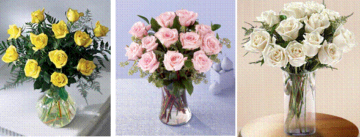
Garden Display
Roses are also the most important perennial garden plants in almost all parts of the world. Roses are not only hardy, the variation in growth and many forms of flowers having numerous colours have made them the suitable garden plants for different uses. They can be used as bushes, standards, climbers, hedges and edges, hangers and in rock gardens.
 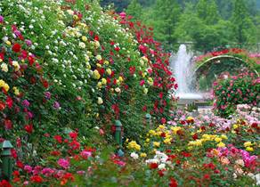
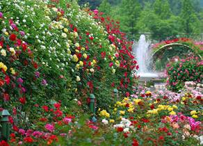
Pot plants
Roses as pot plants in suitable containers are also commercially grown and kept both indoor as well as outdoors.
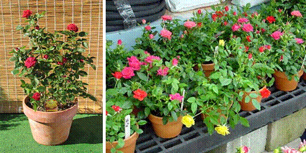
Perfume and allies products
Rose water
Rose water in also an important commercial product from rose petals. It is used as a perfume and in medicines and confectionary. In has the property of cooling the body and is often used in eye lotions and eye drops for its soothing qualities. It is also used in drinking water and sprinkled on the guests at weddings, feasts and other social functions.
Rose oil
Rose oil is important commercial product obtained from rose petals. Apart from sweet fragrance, it has medicinal property and is often used in Ayurveda. Bulgarian rose otto is largely used in perfuming soaps and cosmetics.
Gulkand
Rose petals are also preserved for direct consumption, by making gulkand which is prepared by pounding equal proportions of petals and white sugar. It is considered both as tonic and laxative.
Pankhuri
Dried rose petals are known as pankhuri which is occasionally used for preparing sweetened cold drinks.
Gul-roghan
It is rose hair oil prepared from rose petals by effleurage with wet sesamum seeds.
Source of Vitamins
Rose hips are very good sources of ascorbic acid, every 100 g of rose hip syrup contains 150 mg of ascorbic acid compared with only 50mg present in fresh orange juice, 20 mg in tomatoes and 5 mg in apples.
Other uses
Rose are also use for making pot-pourri, conserves, rose vinegar, rose petal wine, jams, jellies etc.
Botanical Description
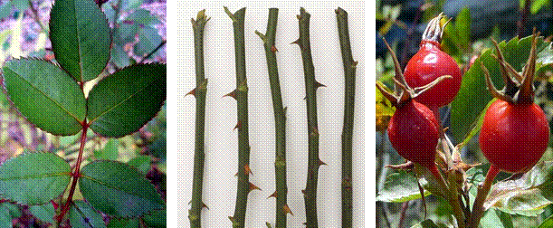
The stem is prickly. The leaves are alternate and pinnately compound. The oval leaflets are sharply toothed. The fleshly berry like fruit is known as hip. Roses have a determinant inflorescence that may assume corymbs, paniculate or solitary form.
Climate
Temperature
Temperature is an important factor regulating the growth of rose plant. Plants are planted at a place where flower yield was highest in plants kept at night temperature between 15 to 18°C and day temperature of 20 to 25°C. During winters, because of the low temperature the quality of flowers is good.
Light
A light duration lesser than 12 hrs leads to lower number of flowers and the flowers are of inferior quality too.
Humidity
Humidity plays an important role in the incidence of pests and diseases affecting the growth and flowering. In case of higher humidity in the atmosphere, water drops accumulate on the rose leaves which if remain over there for a longer period leads to many fungal diseases. Certain diseases like mildews are associated with relative humidity.
Season in which the crop is grown
It can be grown throughout the year. The best planting time is between September and October in plains & in the hills it is during October-November or February-March.
Growing of roses under open conditions
Roses for local market and for preparing different products are grown under open conditions. The details are as follows:
Soil requirement and preparation
Preparation of soil is the key to success in roses. Although any soil is good for rose cultivation provided it has proper drainage. The ideal soil should be medium loam having sufficient organic matter, with a pH of 6.0 and 7.5. The soil should have a fine tilth up to a depth of 50 cm and should have a good drainage facility. The soil should be free from gravel, stones, brick pieces and other foreign material and exposed to sun for at least a week.
If the soil is deficit of organic matter then 10-12 per cent of additional organic matter may be added to it. Upon land preparation, beds/ plots of 1- 1.5m wide and 30-40m long should be prepared.
Planting Distance
The planting distance depends on the types of roses and location. For cut flower production, a spacing of 60 x 30 cm is recommended. Normally roses are planted at 60 x 60 cm spacing.
Varieties
There are different classes of roses according to the type of flowers they bear:
(A) Hybrid Tea
This is the most important class of roses. The flower buds of this class are longer and look beautiful. The flowers of this class are slow opening and hence can be kept in vases for a longer time. The flower spikes are also longer. Flowers of wide range of colours are available in this class but red, orange, yellow and some other dark colours are more preferred in the market.
Red: First Red, Avon, Happiness, Mr. Lincoln, Raktagandha, Black Lady, Montezuma, etc.
Yellow: Aalsmeer Gold, Gold Medal, Golden Star, Golden Time, Yellow Success, Pusa Sonia
Orange: Super Star, Summer Hoilday, President and Grand Gala
Bi-colour: Anvil Spark, Mudhosh, Double Delight, Supriya, Abhisarika, Kiss of Fire, Tata Centenary.
Scented: Avon, Granda, Papa Meilland, Blue Perfume, Eiffel Tower, Oklahoma
(B) Floribunda
There is profuse flowering in this class of roses but the flowers shed soon. That’s why this class of roses is largely used for decoration and bedding purpose. The important varieties under this class are as follows:
White: Iceberg, Summer Snow, Margette Maril, Chitchor, Chandrama
Pink: Prema, Sadabahar, King Arthur, Bridal Pink
Yellow: Arthur Bell, Dr. Foun, Allgold, Sea Pearl, Golden Times
Mauve: Neelambari, Angel Face, Africa Star
Orange: Doris Norman, Suryakiran, Jorina, Jambra
Bi-colour: Charisma, Mask Red, Paint Box, Nav Sadabahar, Red Gold, Rare Addition
Scented: Angel Face, Delhi Princess
(C) Polyantha
The rose plants of this class are small and the flowers come in cluster. The main varieties of this class are Anjani, Rashmi, Nartaki, Priti, Swati, etc.
(D) Miniature
The roses of this class are dwarf in stature and the twigs and the leaves are also small. The flowers of this class are used in flower arrangement:
Red: Beauty Secret, Dark Beauty, Fast Fire
White: Green Ice, Z-Trail, Aany
Pink: Windy City, Sweet Fairy, Dizzler
Yellow: Baby Gold Star, Kale Gold, Delhi Star Late
Mauve: Silver Tip, Blue Bird
Orange: Angel Ripyance, Petayit Foly
Bi-colour: Star and Strip, Jainy Williums, Over the Rainbow
(E) Climber
The branches of these roses are soft and spread like climber. They flower at the end of the branches in small clusters. They are used for raising over the pergolas and the walls. The important varieties are as follows:
Red: Climbing Crimson Glory, Blaze, Cocktail, Black Boy
White: Delhi White Pearl, Shelderer White, Rambler, American Pear, Lamark
Pink: Climbing Show Girl, Lady Water Loo, Climbing of Silk, Soft Silk, Climbing Piece, Pink Meradan
Lemon: Miracle Neel, All Gold, Golden Shower, High Moon
There is profuse demand of red, pink and orange coloured cut roses. It is suggested that the following varieties are more profitable to grow.
Gladiator, Queen Elizabeth, Bull’s Red, First Red, Happiness, Grand Gala, Confetti, etc.
Preparation of Field
Beds are prepared for the cultivation of roses. If the soil is light and proper drainage is there, the planting can be done even without making beds but if the soil is heavy and proper drainage is not there, raised beds (40 cm above the ground) should be prepared. Pits must be dug before the onset of rain so that the soil may settle down. Pits of 20-30 cm wide & 30 cm deep should be prepared and likewise the beds should be prepared. Care should be taken that the top soil should remain on the top.
Propagation
Commercial method of propagation is by cutting and budding.
a) Cutting
Scented roses are mainly propagated through cuttings. Hard wood Cuttings in case of polyanthas, climbers, ramblers and soft or semi hardwood cuttings for miniatures are used. Cuttings are collected from healthier plants with 15-20 cm length and 3-4 nodes. Cuttings are treated with IAA, BA 100ppm. Cuttings are planted in mist chamber for easy and quicker rooting.
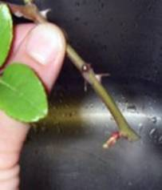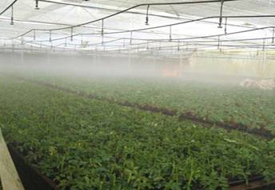
B) Budding
Hybrid and Floribunda roses mainly propagated through budding. ‘T’ budding is the common method. Root stocks used are R. multiflora (Briar root stock), R. indica var. odorata, R. bourboniana, R. laxa, R. canina and R. noisettiana.
When a rose plant comes into flower small swellings are visible between the stem and stalk of the leaf. Select the eyes which are plump and not started to elongate and grow. Cut off the portions of the branch with the eyes selected is called as 'bud wood' with a budding knife remove a shield shaped piece of the bark and the eye. The Root stock should be kept ready by cutting the branches and side shoots which are not required. Make a sharp horizontal cut at a suitable height in the stock and then make a vertical ' T ' shaped cut in the stem of the stock. The 'eye 'should point towards the top and is tied with fibre.
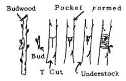
Steps in T / Shield Budding
| 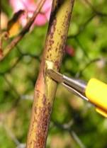 | 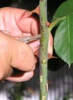 |
Preparation of buds from Scion
| 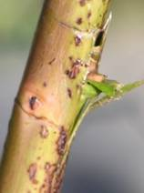 | 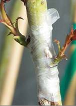 |
‘T ' shaped cut in the stem of the stock
Inserting and wrapping of the bud
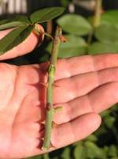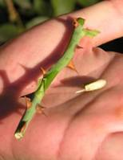
Preparation of Beds and pits
The beds or pits for planting are prepared at least a month before the date of planting. The preparation of beds may be taken up during May or June so that the soil gets a thorough exposure to sun and air, and during the rainy season it gets a chance to settle down before planting. The beds are prepared to a depth of 60-75 cm and a trench of 45-60 cm across is dug to 30 cm depth. The trench is again dug and forked. While forking a basketful of well-rotten cow dung manure and a double handful of bone meal may be mixed in the soil.
If the soil of the bed is heavy clay with poor drainage, the beds are raised to a level of 5 - 10 cm above the ground. To improve the heavy clay soil, hydrated lime @ 1.5 kg/sq.m is forked 30 cm deep into the soil at the bottom of the bed. Gypsum @ ½ kg /sq.m can also be applied. If the soil is light or sandy, plenty of compost or FYM can be added to improve the water-holding capacity. Pits of size 45 cm 3 can be dug while planting in pits.
Season
Planting can be avoided during hot summer and heavy rains. In plains roses can be best planted during Sep-Oct after the cessation of the rains. In hills, planting fan be done during Oct-Nov/ Feb-Mar. depending upon the temperature but the former season is more suited.
Spacing
For,
- Cut flower production – 60 x 30 cm
- Oil extraction – 2.5 x 0.5 m
- Vigorously growing cultivars. 60 x 75 cm / 75 x 75 cm
- Polyanthas – 45 cm
- Miniatures – 30 cm
- Climbing types – 3 m
Selecting plants
Plants may be pruned lightly by removing the suckers and the dead, unhealthy and diseased twigs. Plants selected for planting should have at least three strong canes.
Planting
Before planting, the top 30 cm soil from the pits should be removed. The plant along with the earth ball may be gently lowered into the pit, keeping the main stem in the centre of the pit. The bud union point where the scion joins the stock is kept just above the ground level. Generally, in temperate countries the bud union point is kept below the ground level. While planting it is necessary to spread out the roots evenly. The soil is returned to the pit and firmed towards the center. The plant must be watered copiously immediately after planting.
After care
The newly planted roses require frequent watering in the beginning. After that they may be watered once in five days during summer, and once in ten days during winter. If the soil is sandy, more frequent watering may be necessary. On the other hand if the soil is heavy and retentive of moisture the watering interval may have to be increased. Care should be taken to avoid ‘wet feet’, i.e. to avoid stagnation of water too long in the beds or near the base of the plants as it is harmful to the roots. Suckers originating from the root stock must be removed frequently to prevent the loss of vigour of the plants.
Manuring
After pruning basins formed around the plant sand manures are applied 10-15 cm depth.- 6:6:12 g NPK/plant - Edward and Red rose
- 8:8:16 g NPK/plant - HT/Polyanthas/FB
Application in 3 stages
- 15 DAP
- After first flush of bloom
- After second flush of bloom
- Dose/plant - FYM 10 kg, Urea 65 g, Super phosphate 25 g, MOP 50 g
- Foliar feeding - micro-nutrients - 20 g MnSO4+ 15 g MgSO4+ 10 g FeSO4+ 5 g Boron @ 2g/l of water results in bright coloured flowers.
- Organic manures- oil cakes and bone meal are excellent sources of N and P respectively and may be applied after pruning.
Plant Growth Regulators
- GA 3 @ 250 ppm sprayed during the flushing if found very effective to,
- Increase the length of the stem/shoot
- Increases the no. of shoots/plant
- Induces early flowering
- Prolongs the flowering period
- Enhance the flower yield
- CCC @ 3% results in more no. of buds and also,
- Increase the flowering and size
- Increase the yield Field view
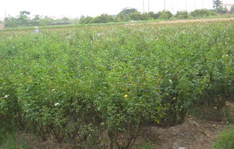Irrigation
Flood irrigation is given at 10 days interval depends upon the soil and climate. Avoid irrigation immediately before and after pruning.
Weeding
Mulching 2 to 4 inches of organic material like wood chips if found to reduce annual weeds and make hand weeding easier. Manual weeding is effective. Hoeing and roguing is also effective. Effective control of broad leaved weeds by spraying with 2,4-D, at the rate of 2 kg/600 l of water/hectare 25–30 days before flowering followed by cultivation of soil to a depth of 6-10 cm.
Pruning
Pruning is the removal of unwanted and unproductive portions of the plant and makes the plant more vigorous and productive.
Objective- Remove the unproductive shoots
- Improve the quality of blooms
- Bush in desired shape and size
- Open up the bush to penetrate sun light
- Rejuvenate the old plants
- Facilitate cultural operations
How to prune
- Remove dead, diseased or damaged wood.
- Remove branches that grow towards the centre of the plant
- Remove the weakest crossed branch and sucker growth (growth coming from below the bud union)
- Shape the plant
- Make a cut at 45 degree angle ¼ inch above an outward facing bud.
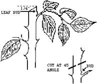
Too high Too low cut Correct cut - Loose flowers : 7.5 t/ha
- Cut flowers : 1st year : 100-120 flowers/m2
- Always use disease free planting material
- Timely weed management should be done.
- Flower should be harvested at proper time and stage. These are distributed to the market in bamboo basket which should be covered under moist muslin cloth.
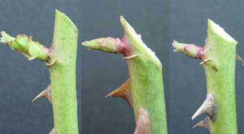
Time of pruning
Exactly 45 days prior to the date of requirement of flowers during October-December. Pruning is necessary when the yield and quality declines.
Method
1st Year: Cut back the shoots to four developed buds remain. Allow the lateral shoots.
2nd Year: Retain all strong shoots and remove weak and diseased shoots. Cut back the strong shoots to 4-5 buds.
3rd Year: Cut back vigorous shoot to half of its growth.
Rejuvenation
After 5-6 years the plants are to be rejuvenated. Cut back all the main branches at 15-20 cm from the base. Apply Bordeaux paste over cut ends to prevent diseases.
Harvesting
Flowering starts from 1st year onwards. Economic yield 2nd to 10th year. Flowers are harvested when the flower buds are in half open stage. For cut flowers, they are harvested at tight bud stage with long stalks.
Handling
As soon as the flowers are harvested, the stems are harvested the stems are lowered in to clean buckets containing water with preservative. The flowers are then cooled down to 2-4 0 C for 5-6 hours. The flowers are graded according to the length of the flower stalk. It varies from 40-110cm depending on the variety and packed 20 per bunch.
Yield
2nd year: 200-240 flowers/m2
3rd year: 300-360 flowers/m2
Pest management
Aphids (Macrosiphum rosae)
The incidence is more in the months of January-February on leaves and flower buds. These are small, black in colour with green tinge. The young and adult both suck the sap from the young twigs, buds and flowers. They suck the cell sap, discolour the leaves and affect flower buds which fall and lose their beauty. This can be effectively controlled by spraying 0.1% Malathion or Metasystox (0.1-0.2%) or Rogor (0.1-0.2%).
Red scale (Lindigapsis rosae)
It is very serious pest of roses which attack mostly in August and September. The branches are covered with reddish-brown encrustations under which the insect sucks the juice of the plants. These pests can be controlled by spraying Malathion (0.1%) or Parathion (0.25%) in April and again in October.
Chaffer beetles (Onycetonia varsicolor)
The adults of these beetles appear in August-September and cut away the leaves. This can be controlled by Monocrotophos (1ml/l) or Dimethoate (1.5 ml/l).
Disease Management
Dieback (Diplodia rosarum)
This is a very serious disease of roses and appears after pruning. The drying up and blackening of pruned shoots start from top to downwards. The stems become black and die. At the point where dry and healthy twigs meet, there appears brown lining and also black spots appear at these places. The conditions favourable for the prevalence of the disease include: application of large fertilizers and manure, excessive irrigation and poor drainage facility, incidence of stem borer, continuous incidence of mites, less light penetration. For its effective control, the infected portion should be dehisced and burnt and the cut ends should be painted with Chaubattia paste (4 part Copper Carbonate + 4 part Red lead + 5 parts linseed oil) or Bordeaux paste, application of optimum dose of fertilizer and by facilitating proper drainage or spray of 3g/ litre of Copper oxychloride (50%).
Black spot (Diplocarpon rosae)
This disease appears in during the humid months. Conspicuous circular black spot (less than 1 cm) with fringed margins appear on either side of leaf; leaves become chlorotic, dry up and prematurely drop. It can be easily controlled by spraying Carbendazim (1g/litre of water) or Captan (0.2%) fungicide at fortnightly intervals.
Powdery mildew (Sphaerotheca pannosa var. rosae)
It is a serious disease that occurs when days are warm & nights are cool. Young growing shoots and leaves are covered with white powdery growth. Infected leaves turn purplish and drop. Flower buds may fail to open. It can be checked by removing all the infected leaves at the time of pruning so that the source of infection is damaged or dusting with 80% Sulphur or spraying 0.1% Kerathane fungicide at fortnightly interval.
Post Harvesting
After harvesting the flowers they are dried on floor under shade for 2-3 days. Upon drying, the seeds are separated by hammering the flowers and the flower straw is separated out by winnowing of the hammered flowers. The seeds are thoroughly cleaned and graded before packing in poly bags or cloths bags, and are stored in cool places. The moisture contents of the seeds must be examined before the packing.
Extraction of Oil and Quality Control
All parts of Tagetes patula contain essential oil, which can readily be extracted by steam distillation. The oil has a pronounced odour and acts as a repellent to flies. It has been reported that 1-limonene, ocimene, 1-linalyl acetate and 1-linalool have been extracted from Tagetes erecta. While evaluating the different species for essential oil contents, T. signata contained higher essential oil (4.25 of dry matter) of very good quality which can be used in perfume industry.
Marketing, Distribution and Transportation
Crop has a good demand in decoration, garlands, loose flower and religious function etc. So can be marketed to major/ big cities where these can be supplied to hotels, institutions, etc. For garlands distribution distributed to the market flower should be packed in bamboo basket which should be covered under moist muslin cloth.
Pinching
Apical portion of shoot if removed early, a large number of axillary shoots arise resulting in well shaped bushy plants bearing more number of uniform flowers. The removal of shoot apices 40 days after transplanting enhances the flower yield.
Important tips and best practices for crop cultivation
Alternative Uses
Loose flower, cut flower, perfumery industry, bedding purpose, medicinal and cosmetic industry, colour making, garland, decoration, etc.
**********
1. First hybrid variety of rose is developed by
a. M. Guillot b. B.P. Pal
c. William Kent d. M.S. Randhawa
2. Hybrid tea roses are communically propagated through
a. cuttings b. layerings
c. T-budding d. Patch budding
3. Time of pruning in rose during
a. Jan-March b. Oct-December
c. July-August d. Sept-October
4. Fruits of rose is called as
a. berry b. capsule
c. hips d. pod
5. Causal organism of die back in rose is
a. Diploidia b. Diplocarpus
c. Colletotrichum d. Cercospora
| Download this lecture as PDF here |